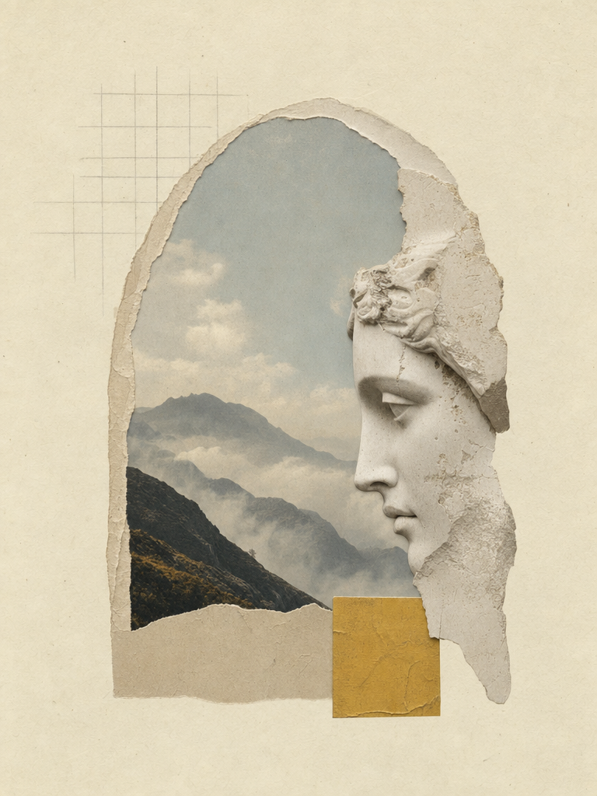

Tóm tắt một đoạn.
Hai buổi đầu cùng hỏi một câu: Khắc kỷ có phải là cam chịu? Phòng đọc đi đến đồng thuận rằng Suy tưởng không dạy chịu đựng thụ động mà dạy phân biệt ranh giới kiểm soát — rồi dồn toàn bộ năng lượng vào phần thuộc về mình: phán đoán, ý hướng, hành động công bằng. Quyển IV cho ta viễn cảnh vũ trụ; quyển V kéo ta về giường ngủ lúc bình minh.
Buổi 1 — cái nhìn từ trên cao.
Đọc to quyển IV, cả phòng dừng lâu ở đoạn “nhìn xuống từ trên cao” (IV.3): tưởng tượng mình lơ lửng trên thành phố, thấy mọi ồn ào co lại thành hạt bụi. Chị Lan Anh (dự lần đầu) nói: đoạn này không làm chị thấy mình nhỏ bé, mà thấy gánh nặng nhỏ đi — deadline vẫn đó, nhưng nó thôi phình to bằng cả vũ trụ.
“Mọi sự đều qua đi như dòng sông; cái tồn tại trôi tuột khỏi tay ta.”— Marcus Aurelius, Suy tưởng IV.43 (ý chính, đối chiếu hai bản dịch)
Buổi 2 — việc của buổi sáng.
Buổi trực tuyến mở bằng đoạn V.1 nổi tiếng — sáng mùa đông không muốn rời giường. Điều phối viên yêu cầu mỗi người viết một câu “thức dậy để làm gì” trước khi bật mic. 31 câu trả lời hiện lên: từ “dậy để đưa con đi học đúng giờ” đến “dậy để không dối mình thêm một ngày”.
“Buổi sáng khi ngại trỗi dậy, hãy nghĩ: ta thức dậy để làm công việc của con người.”— Suy tưởng V.1 (ý chính)
Hai tranh luận nảy lửa.
Câu hỏi mang về.
- Nếu “việc của đời” chiếm 90% cuộc sống, 10% “việc của ta” có đủ để sống tốt không — hay chính cách cầm 10% ấy quyết định tất cả?
- Thực hành “nhìn từ trên cao” mỗi tối: viết 3 dòng nhật ký vũ trụ trong 7 ngày, buổi 3 cùng đọc lại.
- Đối chiếu một đoạn IV hoặc V giữa hai bản dịch khác nhau, ghi lại chỗ dịch lệch nghĩa nhất.
Kỳ tới đọc gì.
Buổi 3 (04.10): quyển VI — phân biệt điều ta kiểm soát được, mang theo một tình huống bực dọc thật trong tuần để mổ xẻ. Buổi 4 (11.10): quyển VII + viết châm ngôn của chính mình. Người vắng buổi 1–2 vẫn tham gia được — đọc tóm tắt trong biên bản này và 20 trang quyển VI là đủ.
Biên bản ghi theo trí nhớ tập thể, hiệu đính ngày 28.09. Trích dẫn tóm ý từ hai bản dịch phổ biến; số đoạn có thể lệch ±1 giữa các bản. Thiếu sót xin gửi về ban điều phối để bổ sung.